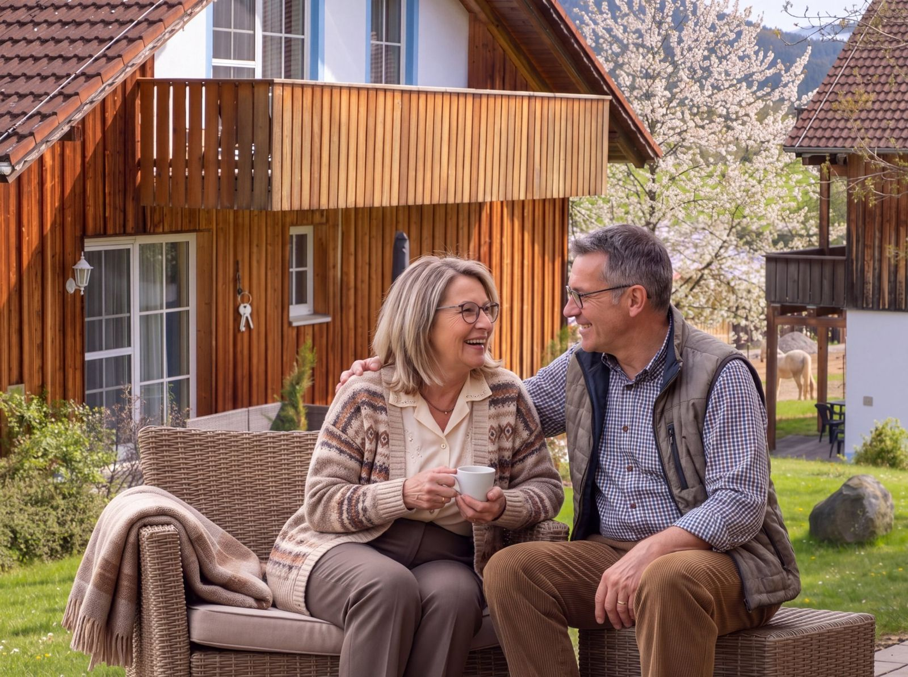
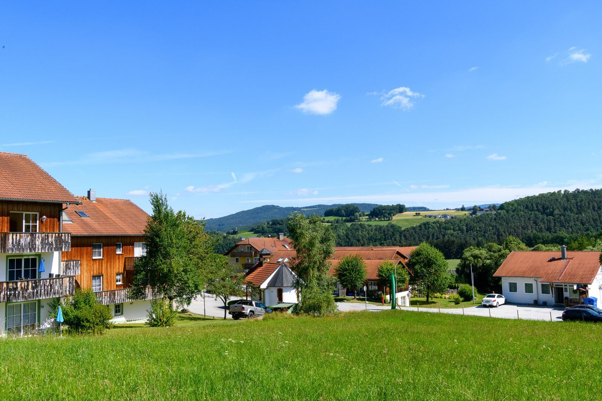
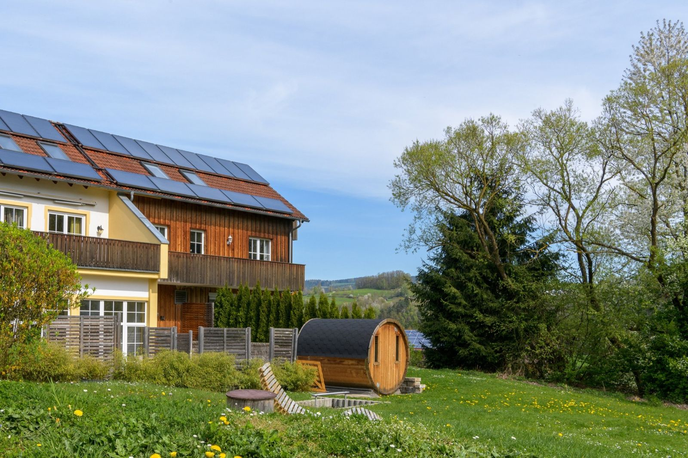
Daheim im Dorf
Wohnen mit Service im Bayerischen Wald. Eigene Wohnung, eigener Schlüssel, eigener Tagesablauf – und ein Team, das da ist, wenn Sie es brauchen.
Kein Heim. Kein Betreutes Wohnen. Ein Dorf.
Im Feriendorf Schwarzholz leben Familien, Urlauber und Menschen, die hier dauerhaft zu Hause sind – Tür an Tür, mitten im Grünen am Rand von Viechtach.
Einen Teil unserer möblierten Wohnungen öffnen wir für Dauermieter. Sie schließen einen ganz normalen Mietvertrag und dazu einen Servicevertrag. Alles Weitere – von der Reinigung bis zur Pflege – entscheiden Sie selbst.
Hausmeister, Rezeption und Ansprechpartner sind ohnehin im Dorf. Das Hallenbad, die Sauna und die Gaststätte auch. Was neu ist: ein Serviceangebot, das mit Ihren Bedürfnissen wächst.
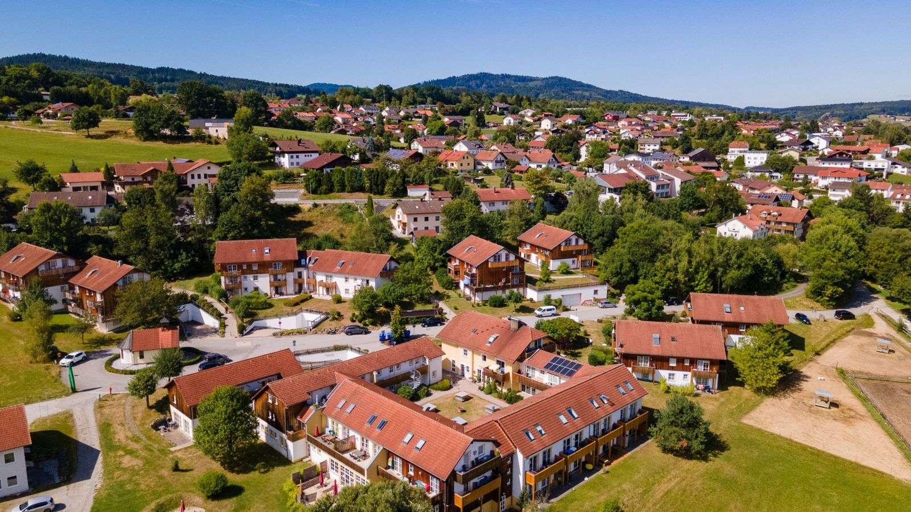
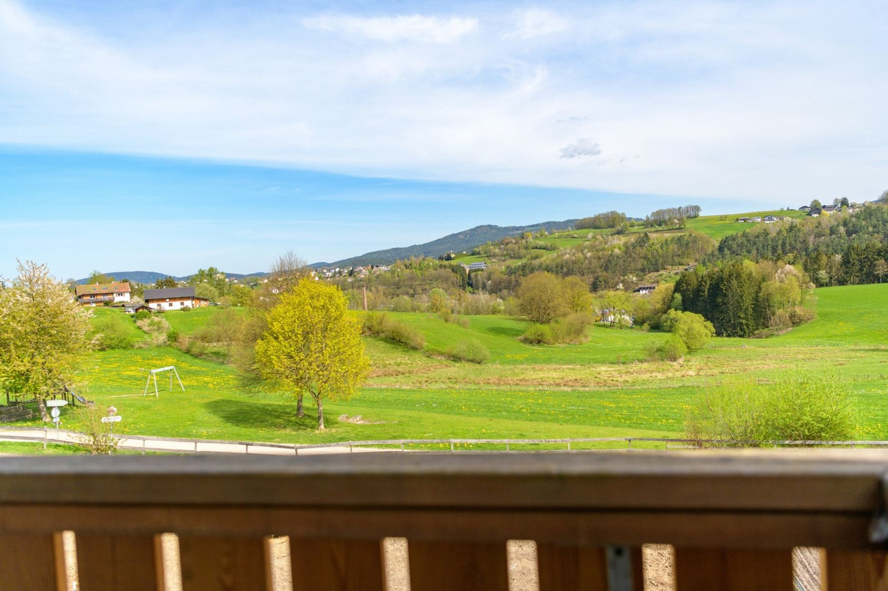
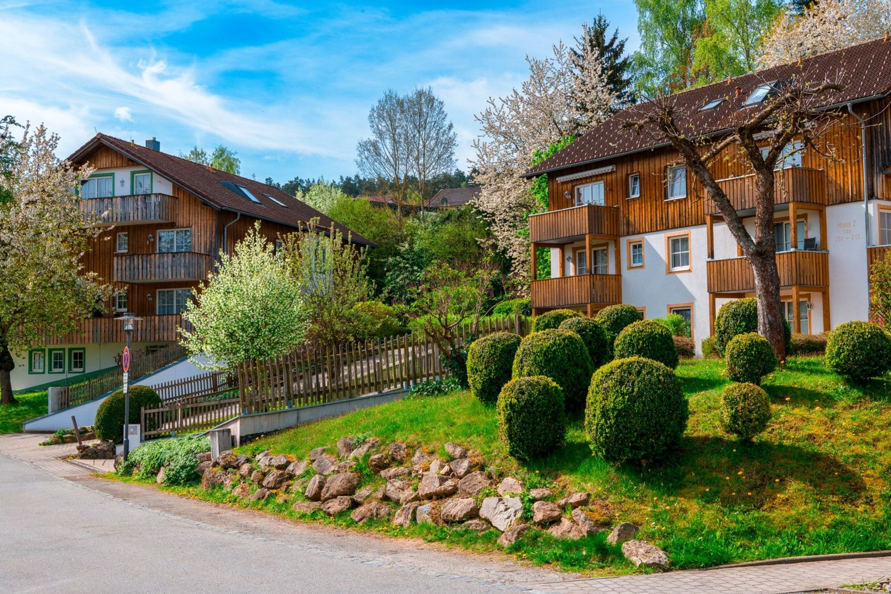
Alles da – und alles nah.
So sieht es bei uns aus.
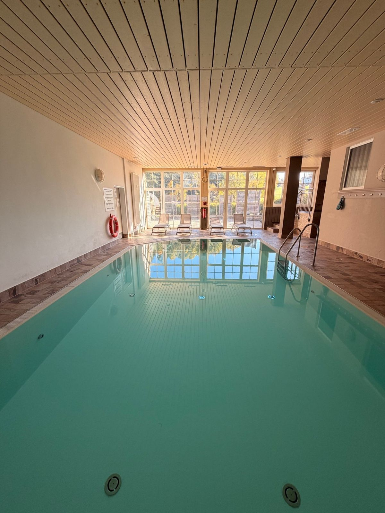
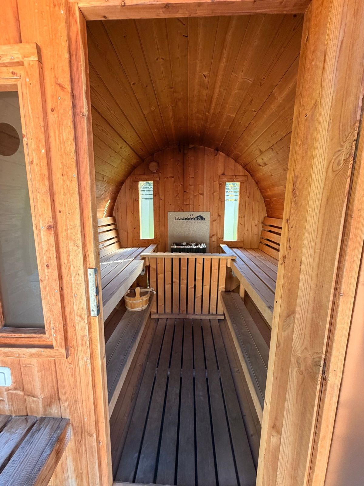
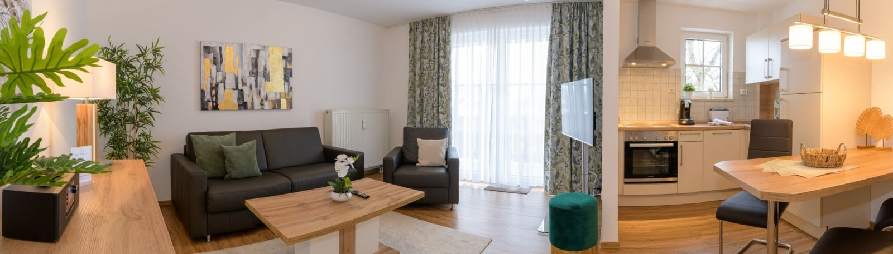
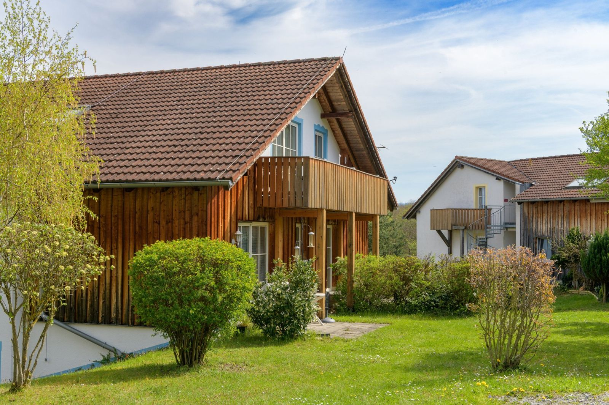
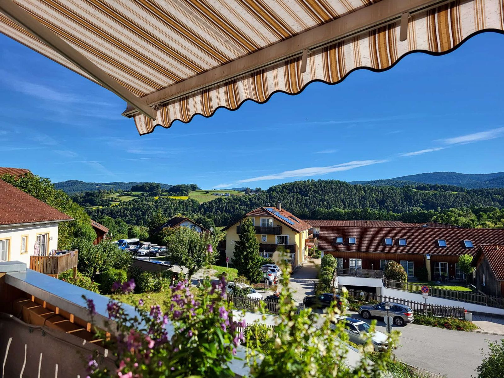
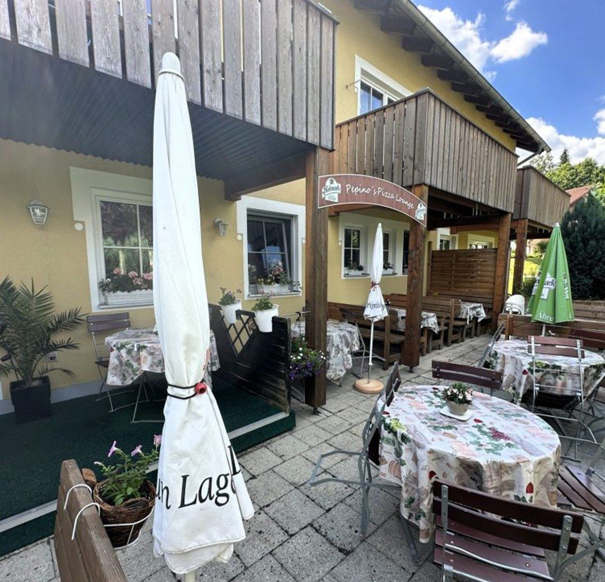
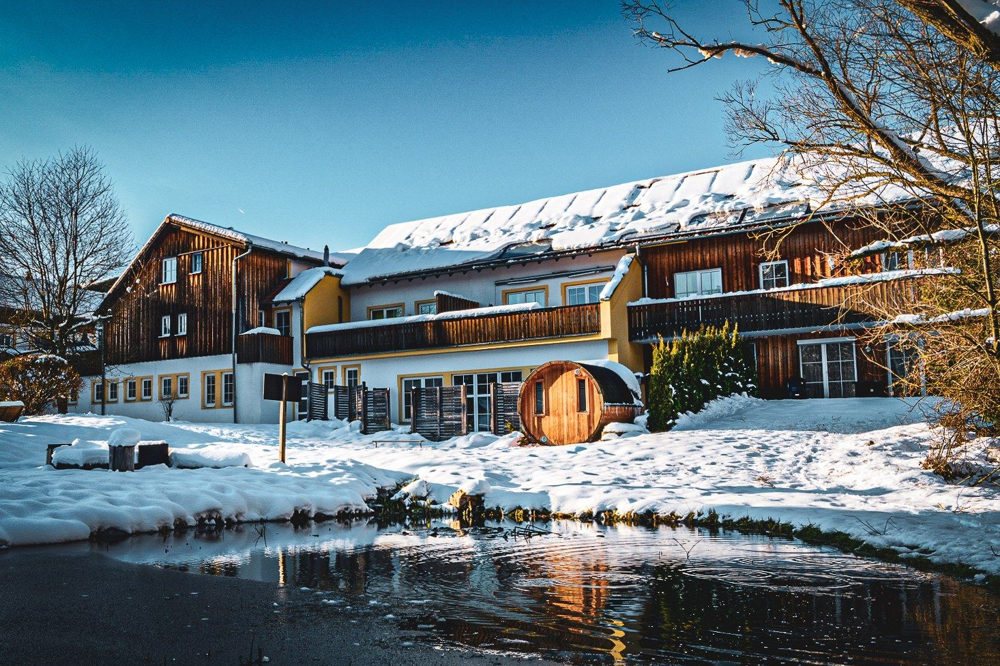
Einziehen und ankommen.
Jede Wohnung ist komplett eingerichtet – oder Sie bringen Ihre eigenen Möbel mit. Ein Balkon oder eine Terrasse mit Blick ins Grüne gehört immer dazu. Es gibt Wohnungen mit ein bis vier Zimmern; gerne zeigen wir Ihnen mehrere zur Auswahl.
Grundausstattung
- Küche
- Wohnzimmer
- Schlafzimmer
- Bad
- Balkon oder Terrasse
- Fernseher
- Internet / WLAN
- Parkplatz
Auf Wunsch altersgerecht
Wenn Sie es möchten, passen wir Ihre Wohnung an:
- Hausnotruf
- Haltegriffe
- Rutschhemmende Bodenbeläge
- Erhöhte Toilette
- Bewegungsmelder
- Herdabschaltung
- Rauchwarnsystem
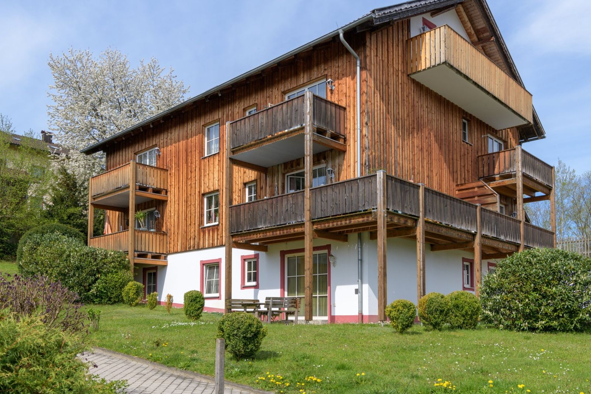
So viel Hilfe, wie Sie möchten.
Grundservice – immer dabei
Fester monatlicher Grundservice – im Servicevertrag enthalten.
- Hausnotruf rund um die Uhr
- Feste Ansprechpartner im Dorf
- Hausmeisterservice und kleine technische Hilfen
- Vermittlung von Arztterminen
- Unterstützung bei Behörden und Anträgen
- Organisation von Dienstleistungen
- Freizeitprogramm und organisierte Ausflüge
Wahlleistungen – nach Bedarf
Buchen Sie dazu, was Sie brauchen – monatlich oder nach Aufwand.
- Wohnungsreinigung
- Wäscheservice
- Einkaufsservice
- Frühstück
- Mittagessen
- Abendessen
- Begleitservice
- Fahrdienst
- Pflege über Kooperationspartner
Für Menschen, die ihr Leben selbst gestalten.
- Aktive Menschen ab etwa 60, die Natur und Ruhe lieben
- Paare und Alleinstehende
- Alle, denen das eigene Haus zu groß geworden ist
- Menschen nach einem Krankenhaus- oder Reha-Aufenthalt
- Rückkehrer in die Heimat Bayerischer Wald
- Menschen mit leichtem Unterstützungsbedarf
- Angehörige, die eine gute Lösung für ihre Eltern suchen
Wenn einmal mehr nötig ist.
Wird Unterstützung nötig, kommt ein ambulanter Pflegedienst als Kooperationspartner zu Ihnen nach Hause. Sie bleiben in Ihrer Wohnung – der Service wächst mit.
- Grund- und Behandlungspflege
- Medikamentengabe
- Wundversorgung
- Pflegeberatung
- Kurzzeitpflege
- Verhinderungspflege
Das Seniorenheim liegt in direkter Nachbarschaft, Ärzte und medizinische Versorgung sind in kurzer Entfernung.
Was Sie wissen möchten.
Ist das Betreutes Wohnen oder ein Seniorenheim?
Nein. Das Feriendorf Schwarzholz ist eine gewachsene Wohnanlage, in der Familien, Urlauber und Dauermieter zusammenleben. Sie wohnen in Ihrer eigenen Wohnung und entscheiden selbst, welche Leistungen Sie dazunehmen.
Wie funktioniert der Vertrag?
Sie schließen einen normalen Mietvertrag für die Wohnung und einen Servicevertrag für den Grundservice. Wahlleistungen buchen Sie dazu, wenn Sie sie brauchen.
Kann ich meine eigenen Möbel mitbringen?
Ja. Die Wohnungen sind komplett möbliert, Sie können aber auch mit eigenen Möbeln einziehen – ganz oder teilweise.
Sind Haustiere erlaubt?
Ja, Haustiere sind willkommen. Sprechen Sie uns einfach vorher darauf an.
Was passiert, wenn ich Pflege brauche?
Ein ambulanter Pflegedienst als Kooperationspartner kommt zu Ihnen in die Wohnung. Die Abrechnung läuft wie gewohnt über die Pflegekasse. Sie müssen nicht umziehen.
Kann ich mir das vorher ansehen?
Unbedingt. Vereinbaren Sie einen Termin – wir zeigen Ihnen das Dorf, mehrere Wohnungen zur Auswahl und die Menschen dahinter. Gerne auch gemeinsam mit Ihren Angehörigen.
Lernen Sie uns kennen.
Rufen Sie an oder schreiben Sie uns – wir melden uns zeitnah und vereinbaren einen Besichtigungstermin.
- Telefon09942 / 905030